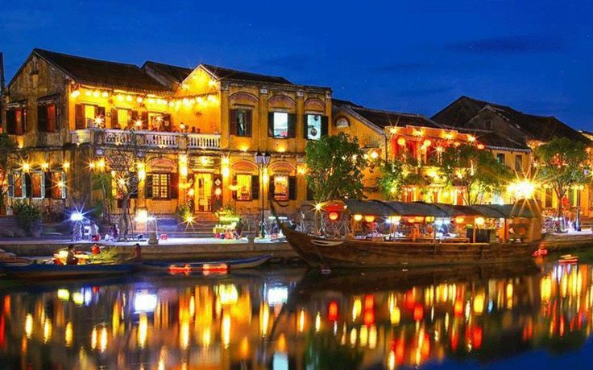
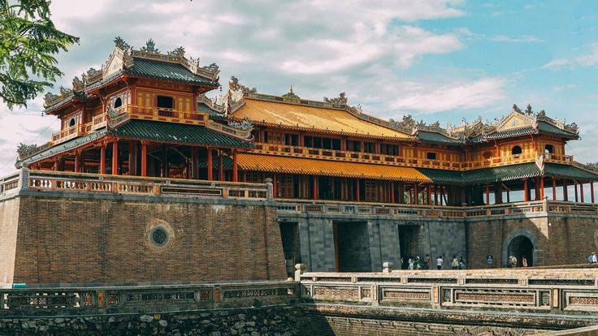

1. Thành Phố Đà Nẵng
Đà Nẵng được mệnh danh là thành phố đáng sống nhất Việt Nam với Cầu Vàng, Bà Nà Hills và bãi biển Mỹ Khê.
Miền Trung nổi tiếng với dải bãi biển cát trắng mịn dài tắp cùng các di sản văn hóa thế giới độc đáo.
Đà Nẵng được mệnh danh là thành phố đáng sống nhất Việt Nam với Cầu Vàng, Bà Nà Hills và bãi biển Mỹ Khê.

Hội An lung linh sắc màu đèn lồng về đêm với những ngôi nhà cổ sơn vàng đặc trưng bên dòng sông Hoài.

Cố đô Huế mang nét trầm mặc, cổ kính với Đại Nội Huế, hệ thống lăng tẩm các vị vua Nguyễn và nhã nhạc cung đình.